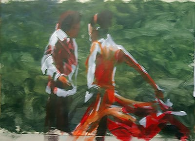

Click here to return to programme page
2019
"Heaven, ocean, earth" a landscape in oils by Paul Simmons
The demonstration was very well attended, boosted by 20 guests.
Paul travelled from Surrey, and gave a brief summary of his career, including an inspiring story about a picture sold as prints by Ikea. He used a canvas board pre-prepared with a neutral ground, to avoid painting on a white background. The paints used were from SAA and Paul went through his limited palette, which did not include any pre-mixed greens or black. The solvent used was Zest-It mainly to avoid the smell of turpentine or linseed oil. Filbert hogs hair brushes were favoured.
The reference was a photograph of a beach scene at Woolacombe, North Devon. Paul had taken the photograph himself, and felt it was important to have an emotional attachment to the subject.
Without any pre-drawing, Paul started to paint in the image, using a high level of solvent on the first coat. He was not worried that this caused runs, as he felt able to incorporate the texture into the painting. The sky was the first section and movement with the brush on application helped to give a feel of movement in the clouds.

Paul’s aim was to cover the whole canvas with paint by the break. He explained the principle of “fat over lean”. The solvent in the early layers evaporated off allowing him to work over it again later. He also demonstrated the use of his “home-made” mahl stick, to provide support working over wet areas of the picture.The sky was “nailed” by the tea break.

After the break Paul worked on the sea and reflections. He allowed his eye to roam all over the reference picture, and by keeping a separate brush for each of the major colours was able to avoid the distraction of continually cleaning the brush. A darker tone in the foreground helped to anchor the picture. He stressed there was no need to slavishly copy the reference. He also felt that it was difficult to judge your own painting when you have just completed it.
In the final stages Paul moved to a rigger brush to work on highlights and the darks.
During questions at the end he demonstrated his system for transporting oil paintings when they are still wet, a variation of the pochade box.
"Painting a fantasy face in watercolour" by Sharon Hurst
Despite the dismal weather the event was well attended. There were only just enough seats for everyone, including 10 guests.
Sharon travelled from Hampshire and was clearly full of enthusiasm for both her subject matter and medium. The support she used was Bockingford NOT 140lb paper that had not been stretched, but was firmly secured with good brown adhesive tape. The paints used were mainly Shin Han watercolour tubes.
The subject for the day had been drawn out in pencil, and the head had been masked with blue masking fluid. One of her trade mark backgrounds was then rapidly applied with a large brush to a very wet paper. Despite working almost vertically, no runs or drips occurred.

Sharon then demonstrated her basic skin tone mix Burnt Sienna with a touch of Alizarin Crimson and toned down with a touch of Burnt Umber. A great deal of water was then added to create the face skin tone wash. The face and arms of the subject were given a quick wash. We were told for not the last time not to touch it when it’s wet. Shaping was applied to the dried surface with a slightly stronger mix of the same wash. A two brush technique was demonstrated – one for the paint and one for the clean water. Sharon went into detail of the anatomy of the face, and how a portrait painter can apply large shapes to quickly gain a convincing likeness.

After the break Sharon started to paint in the features. Using a smaller brush and all the time telling the audience what she was doing and why. We were treated to a lesson on anatomy as well as painting.

Much of the material that Sharon referred to and used is available to view or download on her website http://www.sharonhurst.co.uk/
By the end of the session Sharon had achieved a very convincing image of an attractive young woman. She explained that many more washes and attention to detail would be needed before completion.
The audience were engaged, informed and entertained. Thank you Sharon for an excellent start to our demonstration programme for 2019.

"Figures in acrylic" by Marcus Finch
There was an excellent turn out to see Marcus demonstrate, bolstered by 14 guests. This may be a record number for recent years.
Marcus introduced himself, providing a brief history of his career. Most recently he has been teaching in the West Sussex area. He then anounced that he was going to paint not one but two pictures in the two hours available.
Marcus urged us not to spend a lot of money on materials. Plastic lids as palettes and reasonable brushes from Seawhites were to be used for this demonstration.
He stressed that he would not be striving for photo-realism. Rather he would emulate the style of Jack Vettriano, whose work he admired. For his first painting Marcus created a dark vibrant background by applying the paint with circular motions of the brush. He then put this to one side to dry.
For the second painting Marcus used a reference photograph of a couple dancing the tango. He stressed the importance of placing the reference parralel to your work. He also demonstrated how to check that the rectangles of the reference and the work are of the same relative dimensions. He then took a great deal of time showing how to draw out the subject using angles, measurement and shapes to produce an accurate repesentation.

After the break Marchus painted over his pencil lines in red, creating a strong outline of the image. He then laid in the darks starting with a dark mix of french untramarine and burnt umber. He then overpainted this purple with gradually lighter mixes to achieve skin tones and other details. All the time he was careful to leave the red outline visible.

Finally Marcus added an imaginary background. By eliminating the white he hoped to make the highlights of the painting more pronounced. The finished painting was completed with rather less than 20 minutes of the available time remaining.

Marcus then returned to the background prepared at the beginning. Using a refence of two flamenco dancers, and no preparatory drawing he proceeded with another painting. White was applied with a square brush to capture the highlights. Mid tones were added in brown, and then the darks. Finally a bright red was used to capture the skirt in movement. In a little under 8 minutes the painting was completed.

Our thanks go to Marcus for a thoroughly entertaining and informative afternoon. A great way to finish our demonstration programme for 2018.